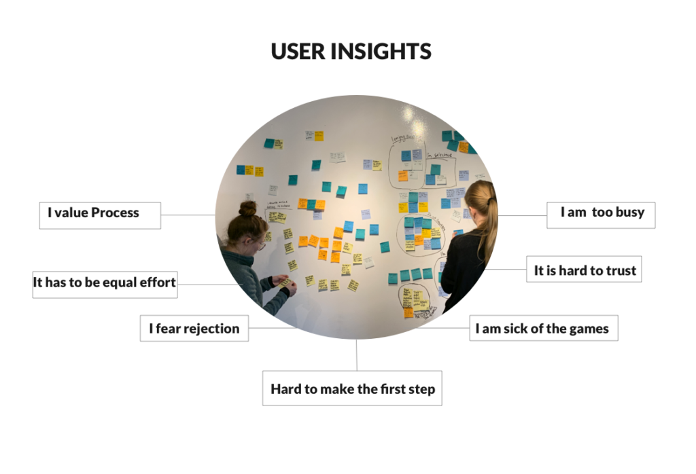
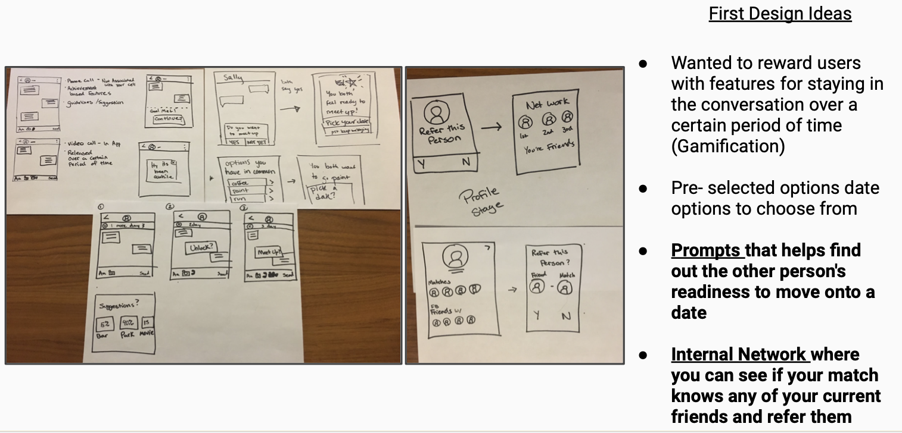
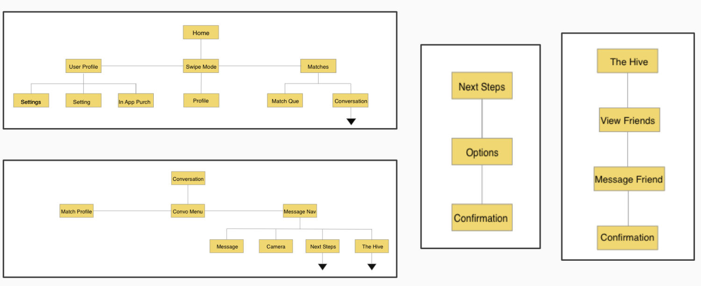
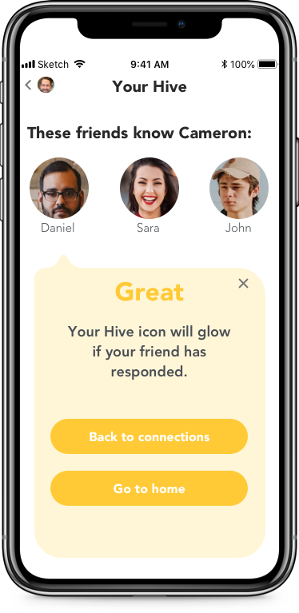

Bumble
Dating can be a daunting task affecting an individuals motivation searching for the right person. By working in a team we encouraged and improved users experience from messaging to dating.
Task
Encourage and empower conversation to increase the number of messages into dates conversion.
My Role
Usability testing, User interviews, Prototyping, Wireframes, Data Visualization
Research Process
- 

-
Seven in-person interviews were conducted to both potential and current users of the app to gain insight into users pain points. We wanted to ask our participants how they use the app and how they message their matches. It was also important to understand why so many conversations were falling flat and dates were never set up.
-
After collecting the data and user insights we were able to simultaneously work on an affinity map to isolate common pain points and patterns.
-
After user interviews, we identified common patterns of thought and pain points for our users. With that information, we created one main persona to embody the majority of our users. Some of the users who did not fit the main persona fell into the two secondary personas that had slightly different processes and goals.
Design Process
- 
- 

-
After the structure of the app and the data collection was sufficent my team and I conducted a timed design studio to rapidly put our ideas on paper and collectively decide what best fit out user needs.
-
Members of my team worked on a site map and some possible screen flows after we gained insight on our users and sketched ideas. These screen flows were influenced by our design studio we collaborated on.
-
Conducted four usability tests throughout the process with our paper prototype and wireframes to determine the ease of use and root of any confusion among screen flows.
Delivery Process
- 
-
We believe that by enhancing Bumble with an additional set of features we will enable daters to more confidently move from messaging to dating. We will know this to be true when daters that use the features meet in person more often than most. View a sample video of the final hi-fidelity prototype seen below.